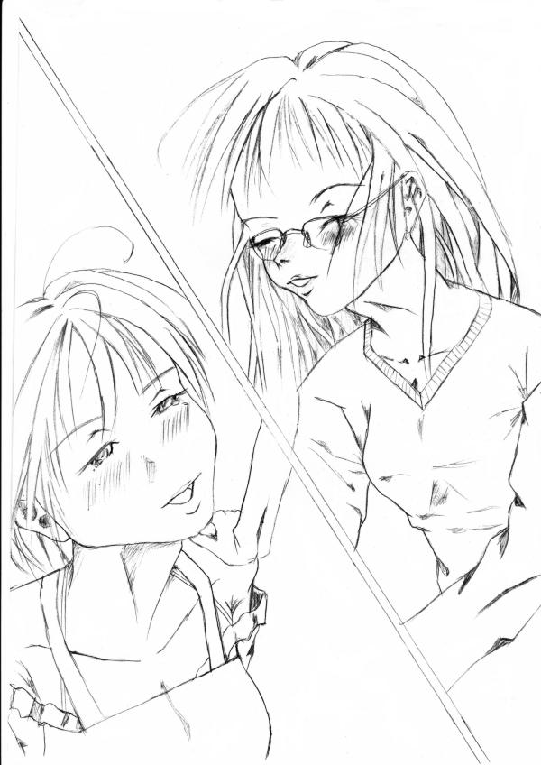

お兄ちゃん♪ 大好きっの続きだよ♪
作：きりきり
あたしの名前は、高橋真澄、高校受験を控えている中学三年生。
今年の夏休みこそは、勉強を頑張らないとなあ。
そんな、あたしには、大学一回生のお兄ちゃんがいるんだ。
だけど、今日の朝、女の子になっちゃったんだよね。
パパが友達から貰った古い土器で麦茶（水）を飲んたのが原因みたい。
まあ、女の子になったお兄ちゃんは、はっきり言って、元々、女顔だったのも原因だと思うけど、髪が伸びて、かなりの美人なんだよね。
あたし、そんなお兄ちゃんに惚れちゃったみたい。あたし、女の子なのに変よね。
その罪なお兄ちゃんは、今、夕飯を作っているの。
ママが死んでから、毎日、お兄ちゃんが料理を作ってくれているんだぁ。
あたしは、どうも料理が苦手でお兄ちゃんにまかせっきり。
逆だろ！というツッコミがあるだろうけど、不器用なんだからしょうがないでしょ。
まあ、お兄ちゃんもまんざらでもなさそうだから、いいよね。
でも、今日は、お兄ちゃんと一緒に料理をしたい気分♪。
だって、少しでもお兄ちゃんと一緒にいたいんだもんっ。
「ねえ、お兄ちゃん。あたしも料理を作るの手伝うよ♪」
そう言って、あたしは、お兄ちゃんが立っている台所に移動する。
女の子になったお兄ちゃんは、あたしの服を着てエプロンを付けてる。
やっぱり、似合っているなあ。
ああ、なんか憧れちゃう。もしかしたら、死んだママが若かった時もこんな感じだったのかな。
「めずらしいなあ。真澄が料理の手伝いをするなんて」
「あたしも、もう、そろそろ料理を作れるようにならないといけないかなぁと思ってね」
「そうか。やっと真澄も女の子としての自覚が出てきたみたいだな。
うんうん、やっぱり女の子は、料理が出来ないとな。
それにお前が結婚した時、料理が出来ないと相手が可愛そうだしな」
「結婚なんてしないよ♪ あたしは、ずっとお兄ちゃんと一緒にすごすんだもんっ」
そう言って、あたしは、側面からお兄ちゃんに抱きつく。
「おい。真澄、やめろ！」
ふっふ、お兄ちゃん、顔を赤くして恥かしがってる。
お兄ちゃん、あたしの胸が片腕に当たったから意識したのかな。
あたしも大胆な事、しちゃった。きゃー、やだぁー、今頃、恥かしくなってきちゃった。
「お兄ちゃんのエッチ。
あたしの胸が当たったから、照れているんでしょ」
あたしは、お兄ちゃんから離れて、そう言う。
「バカ、そんな訳ないだろ。誰がお前のベチャパイなんかで」
むかっ！ 失礼な事を言うところは、やっぱりお兄ちゃんね。
「そう言う、お兄ちゃんの胸は、どうなのよ」
『ムニャ』
…あっ、ちょっとだけ、あたしよりも大きい。ちょっとだけね。
「あっ、アン！
こら、真澄、や…やめろ」
「あ！？ ゴメンなさい。お兄ちゃん」
あたしは、触れているお兄ちゃんの胸を放す。
ピックリした。あの喘ぎ声、お兄ちゃん、感じちゃったみたい。
「まったく。お前は、邪魔しにきたのか」
お兄ちゃんは、手で胸を守りながら怒っている。
お兄ちゃんには、わるいけど、かわいい仕草だな。
「あっはは！ お兄ちゃん、本当にゴメン」
「もう、さっきみたいな事するなよ。
まったく、女の体は、どうしてこんなに敏感なんだ」
「うん、わかったよ。
…じゃあ、あたし、この人参、切るね」
「ああ、気を付けろよ」
あたしは、人参の皮を包丁で剥く。
もう、人参は、皮が固いから、面倒くさいのよね。
『クサッ』
「いっ！」
痛い〜！ もうヤダ〜、指、切っちゃった。
「真澄、大丈夫か？
ホラ、指をかせ」
お兄ちゃん、あたしの切った指の手を掴んで、口に入れて舐めてる。
「お・・・お兄ちゃん？」
カア〜、駄目、心臓がパクパクいってるよ。
あたしの指がお兄ちゃんの口に…
「まったく、しょうがない奴だな。
ばんそうこう、貼っておけよ」
お兄ちゃんは、あたしの指を離して、心配そうな顔で言う。
「…うん」
どうしよう、あたし、なんでこんなにドキドキしているの。
お兄ちゃんの顔をまともに見れないよ。
でも、お兄ちゃんの口、柔らかくて暖かかった。
「どうしたんだ。真澄。
様子が変だぞ。
指、そんなに痛いのか」
「ううん。大丈夫だよ。心配しないで。
こんな傷、唾をつけとけば治るよ
お兄ちゃんが、私の指を舐めたから、ピックリしただけだよ」
あたしは、無理やり明るい顔にして、傷ついた自分の指を舐めて、作り笑いをした。
この指、お兄ちゃんが舐めてくれたんだよね。
なんだか、エッチな気分。
「ごめん、真澄。
つい子供の時の癖で…
気持ち悪かったよな」
そういえば、あたしが小さい頃、遊んでいて転んた時、お兄ちゃんが傷口を舐めてくれた事があったっけ。
それが、すごく嬉しかった記憶があるなあ。
「ううん、良いのよ。
ぜんぜん。気持ち悪くないよ
ありがとう、お兄ちゃん
それにこんな美人なお姉様に舐めてもらったんだもん。
光栄なくらいだよ」
ふっふ、今度はお兄ちゃんが赤面しちゃってる。
「へ、変な事を言うな。真澄。
…まさが、お前、そんな趣味があるのか」
うっ、そんな事、聞かないでよ。
でも、確かにあたしって変なのかもね。
女の子になった実の兄を好きになるんだもんっ。
「違うわよ。
お兄ちゃんに憧れているだけだよ。
女の子はねえ、自分より綺麗な女の人を見ると憧れちゃうの。
自分もその人のように美人になりたいと思ってね♪」
「ふ〜ん、そう言うものなのか、女の子って。
なんか、変わらない気もするけどな」
お兄ちゃん、納得していないなあ。
まったく、深く考え込まないでよ。
「もう！ お兄ちゃん、変な事ばっかり、言ってないでさっさと夕飯作ろう」
「あっ、ゴメン。そうだな。」
あたしとお兄ちゃんは、休んでいた夕飯作りを再開した。
どうやら今日はカレーライスのようね。
だって、玉ねぎ、人参、ジャガイモを切っているんだもん。
お兄ちゃんが玉ねぎを切っている時、涙を流すのを見たかったけど、お兄ちゃんの包丁捌きが上手すぎて期待外れ。あ〜あ、残念だな。
野菜を切ったあと、あたしは、スライスした玉ねぎを入念に炒める仕事に回る。
なんでも玉ねぎを長時間、炒めると玉ねぎの甘さが出てカレーがおいしくなるみたい。
お兄ちゃんは、まな板や包丁などを洗った後、新聞読みながらテレビのニュースを見ている。
もう、あたしの近くにいてほしいのに、どうしてこんな面倒くさい事、一人でしないといけないのよ。
「お兄ちゃん！ 玉ねぎ、狐色になったよ」
「ああ、じゃあ、人参と肉をいれてくれ」
「うん」
あたしは、お兄ちゃんに指示された通り、鍋に人参と肉を入れて少し炒めてから水を入れる。
ふう〜、やっと終わったよ。
「もう、午後６時か・・・
確か、最後にあの土器で水を飲んだのが、朝の七時頃だから、もうそろそろで男に戻るな。
そろそろ、元の服装に戻ろうかな」
様子を見に台所にやってきたお兄ちゃんは、あたしにそう言ってきた。
えーー！？ 元の服装に戻ちゃうのぉ！
「お兄ちゃん、まだ今の服装でいいんじゃないの」
「何、言ってるんだよ。こんな姿で男に戻るのはご免だぞ」
うぅー、そうだよね。確かに恥かしいよね。
うーん、なんとか、お兄ちゃんを止める方法はないかな。
「でも、お兄ちゃん、服を着替えるのは、料理をした後でいいじゃないの？」
「そんなの俺の着替え中、お前が料理を見てくれたら、いいだろ」
ニヤリ、墓穴を掘ったわね。お兄ちゃん。
「ふふ、そんなに言うなら良いよ。お兄ちゃん。
でも、お兄ちゃんは、一人で着替えられるのかな？」
「う…」
お兄ちゃん、たじろいでいるわ。
もう、ひと押しね。
「まあ、ゆっくり、着替えてきなよ。
カレーの事なら、あたしがおいしく味付けしといてあげるから」
「真澄が味付け…」
ふふ、お兄ちゃん、困っているわ。
あたしの味付けを否定されたのは、しゃくにさわるけど、まあ、良いわ。
「あー、わかった、わかったよ。夕食を食べてから着替える事にするよ」
「わあ、嬉しい。
ありがとう、お兄ちゃん」
「はあ〜、しょうがないか。
でも、真澄、如何して俺がこのままの格好だとうれしいんだ。
まさが、やっぱり、その趣味があるとは言わないだろうな」
しつこいなあ。
「ち、違うわよ。
あたしは、ただお兄ちゃんが綺麗だから…」
「え！？」
ヤバ、紛らわしい事言っちゃった。
これじゃ、ますます怪しまれちゃうよ。
「違う、違う。そうじゃなくて、お兄ちゃんがママに見えたから…」
ふうー、我ながら、良い言い訳だわ。ママ、ご免なさい。
……でも、ママが生きていたら、こんな感じでカレーを作ってくれたのかな。
「真澄…」
いけない。涙が出てきちゃったみたい。
「ご免。お兄ちゃん、心配しないで」
「そうか。わかったよ。
ぎりぎりまで、母さんの変わりをしてやるよ」
「ほ、本当？」
「ああ、俺、…じゃなくで私が…私が真澄ちゃんのママよ」
お兄ちゃん……、眼鏡を曇らせて、顔を真っ赤にしちゃってる。
ありがとうね。お兄ちゃん。
アハッ、お兄ちゃん、顔をあたしから背けちゃって、可愛い。
「別に普段通りで良いよ。お兄ちゃん。
あたしは、今のように一緒に料理とかしてくれるだけでも嬉しいんだから」
「そ、そうか。あははは、助かったよ。真澄
やっぱり母さんの真似をするのは、滅茶苦茶、恥かしいな」
お兄ちゃん、ほっとしたみたい。
「ありがとうお兄ちゃん」
あたし、お兄ちゃんに抱きついちゃった。
あっ、やっぱり柔らかい。この柔らかさは胸かな。
「お、おい。何、するんだ真澄」
「お願い。暫く、こうしてて、お兄ちゃん」
「ああ…」
お兄ちゃんが、あたしを優しく抱きしめてくれた。
ママになってくれているんだね。
「お兄ちゃん…」
あたしは、顔を上げて、お兄ちゃんの顔を見てみた。
すごく優しい顔をしている。
…それにお兄ちゃん、なんか、すごく艶めかしい。
キスしても良いかな。良いよね
「お兄ちゃん…」
あたしがお兄ちゃんの少し開いている唇に触れようとした時、カレーの材料を煮込んでいる鍋が沸騰して、泡が噴出した。
『ゴドゴト………』
「あっ、やば」
お兄ちゃんは、慌ててあたしから離れて、ガスコンロの火を消す。
もぉー、いいところだったのに…
「ご免なさい」
「ああ、良いよ別に。
俺もボーとしていたのが悪かったんだから」
「うん…」
「ふう、やっと出来たな」
「出来たね」
お兄ちゃんと学校の事とかの話をしている内に夕食は出来あがった。
なんか、楽しかった。
「じゃあ、頂きます」
お兄ちゃんは、カレーを食べ始めた。
あたしも食べようと。
「頂きま〜す」
美味しい。いつものカレーの味と変わらないはずなのに、どうして、こんなに美味しいのかな。
「美味しいな。
今日は、上手くいったみたいだな」
「うん、美味しいね。
あたしが手伝ったお陰ね」
「何を言ってるんだよ。
味付けは、全部俺がやっただろ」
「もお、お兄ちゃんのイジワル、あたしだって色々、やったじゃない」
ちょっと、ひねくれてみる。
「…まあ、玉ねぎとか炒めてくれたけどな」
お兄ちゃんは、髪を掻きながら言っている。
「そうだよ。凄く大変だったんだから」
「その分、美味しくなってるだろ」
「うん、そうだね」
ふ〜ん、玉ねぎを炒めたのって、結構、大事な事のようね。
…ん、アレ？ お兄ちゃんの顔にご飯粒が付いてる。
「お兄ちゃん、じっとしといてね」
「ん」
あたしは、手を出して、お兄ちゃんの顔に付いているご飯粒を取って、食べた。
うん、美味しい。
「お兄ちゃん、ご飯粒が付いていたよ」
「ああ、ありがとう」
お兄ちゃんは、顔を下に向けてそう言った。
もしかして、照れているのかな。
「でも、その、なんだ、汚くなかったか」
汚いて、もしかして、お兄ちゃんの顔に付いていたご飯粒の事？
「お兄ちゃんの顔に付いていたご飯粒？
それなら、全然、汚くないよ。どうして」
「あ、いや、いいんだ」
「変なお兄ちゃん」
あんな綺麗な顔に付いていたご飯粒なのに、何処が汚いんだろう。
「真澄、リモコン近くにあるだろう。テレビつけてくれないか」
もう、雰囲気を壊す事、言うわね。お兄ちゃん。
「駄目だよ。お兄ちゃん
食事の時は、静かな方がいいでしょう」
「まあ、そうだけどな。
珍しいな。普段は、率先してお前がテレビをつけるのに」
「いいでしょう。たまには。お兄ちゃんとゆっくり話をしながら食べたいの。
そうだわ。さっきの話の続きを聞いてよ」
あたしは、料理していた時、話していた学校の話や友達との話の続きをお兄ちゃんに聞いてもらった。
「お兄ちゃん、どうしたの」
夕食も食べ終わろうとしていた時、お兄ちゃんの顔色が青くなって、なにかを我慢しているような顔になっている。
「なんでもない。大丈夫だ。心配しないでくれ」
明らかに大丈夫じゃないわね。
う〜ん。もしかして…
「お兄ちゃん、もしかして、おトイレ？」」
お兄ちゃんは、渋々、青白い顔を赤くして頷く。
やっぱり、そうなのね
そう言えば、朝からお兄ちゃん、トイレに行ってなかったけ。
ずっと、我慢していたのかな。
「早くトイレに入った方がいいよ」
「で、でも、今の僕、女の子だから、…やっぱり、一応、僕も男の訳で…、ごにゃごにゃ」
お兄ちゃんは、すでに涙目になりながら、トイレに入るのを意味不明の言い訳をして拒否している。
理由は、恥かしいからだと思うけど。
でも、お兄ちゃんが自分の事を”ぼく”で言うなんで、そうとうやばいのかな。
昔からお兄ちゃん、気弱になると”ぼく”で言うからね。
「でも、このままだと漏れちゃうよ」
「いや、男に戻るまで我慢する」
もう、とても、これ以上、我慢できる様子ではないよ。
立ち上がって足を震わせて、耐えているんだもん。
「できないと思うよ。やせ我慢していないでトイレにいきなよ。
体、壊すよ」
「でもぉ………」
「もう！ お兄ちゃん、言い訳してないで、さっさとトイレに入りなさいよ。
こんな所で漏らしたいの」
あたしは、お兄ちゃんの手を力強く掴み、トイレに移動させようとした。
「あっ、待って！ ゆっくり歩いてくれよ。
オ、オシッコ、もれちゃうよ…」
もう、お兄ちゃん、泣きそうになっちゃって。
なさけない光景なんだろうけど、なんか可愛いのよね。
「うん、わかった。ゆっくり歩こうね」
すでにお兄ちゃんは、一人で歩けない状態になっている。
まったく、しょうがないなあ。
「お兄ちゃん、スカートを捲って座って、するんだよ」
「わかった」
お兄ちゃんは、トイレのドアの前に来た時、大急ぎでトイレの中に入った。
「お兄ちゃん、あたしも手伝おうか」
「や、やめてくれ。」
クス、やっぱり、恥かしいか。
トイレの中から用を足す音がしているわね。
どうやら、間に合ったみたいね。
「お兄ちゃん、トイレットペーパーでアソコ拭いときなよ」
「…………」
返事が返ってこないなあ。
「お兄ちゃん！」
お兄ちゃんをもう一回呼んでみる。
その時、トイレの水を流して、お兄ちゃんが出てきた。
ああ、白い顔を真っ赤にしちゃって。
人間の顔って、こんなに赤くなるんだ。
「い、痛い、お、お腹、痛い」
お兄ちゃん、手でお腹を抑えている。そうとう痛いのかな。
ずっと、トイレを我慢していたからね。
「お兄ちゃん、ソファーに座って休もう」
「ああ…」
「はあはあ…」
お兄ちゃんは、息を深く吐きながら、手でお腹をさすっている。
「大丈夫。お兄ちゃん。」
「うん、だいぶ、良くなってきた」
「まったく、こんなになるまで、なんで我慢していたのよ。お兄ちゃん」
「…恥かしくて」
「恥かしいからって、体を壊すまで我慢する事ないでしょ！」
「まあ、そうだけど。しかしなあ」
お兄ちゃんって思っていたより純情なのね。
彼女が出来ない訳がなんとなくわかったわ。
「もう、しょうがないわね
…じゃあ、お兄ちゃんは、休んでいて。
今日は、あたしが、食器を洗っとくから」
「ああ、すまん」
「別に良いよ。
それじゃあ、あたしは食器を洗いに台所に行くね。
お兄ちゃんは、テレビを観ながら休んでいて」
『ドゥルルール、ドゥルルール、ドゥルルール』
電話が鳴っている。誰からだろ。
あたしは、台所にいるから、すぐに電話を取れない。
『ガシャ』
「はい、高橋です」
あっ、お兄ちゃんが電話を取ったみたい。
「……ん。
なんだオヤジか」
なんだぁ、パパからの電話かあ。
「ああ、そうだよ。充だよ。
……え！？ 土器？
…忘れたって何処に……食卓に？」
お兄ちゃんは、受話器を一端、放して食卓に土器があるのを調べている。
「ないな。
おーい。真澄。あの土器しらないか？」
「食卓に置いてあったら危ないから、食器棚に入れといたわよ」
「そうか
……あ、あった。あった。
…親父、あったぞ。
…あー、わかった。割らないように保管しとくよ
…明日、大学に持って来いって！ まったく面倒臭いな
…じゃあな」
お兄ちゃんは、受話器を置いた
「お兄ちゃん、さっきの電話、パパからなの？」
「ああ、まったく困った親父だよ。
大事な研究材料を忘れるんだから」
「土器の事だね
確かに困ったもんだね」
ふっふ、本当は、知っていたけどね。
悪いことしちゃったかな。
いやいや、忘れたパパが悪いんだから。
「もう８時頃だな。
…もうそろそろ、男に戻ってもいい頃なのにな」
「そうだね」
家に帰ってからも、あたしが飲ませたから、実は明日までだけどね。
「まあ、所詮、言い伝えだからな。
１２時間ちょっきりで事はまず、ないよな。
しょうがない。もうちょっと待つか」
「そうだよ。気長に待とう」
お兄ちゃんは、頷いてくれた。
「あっ！？ そうだ。今の内に男の服装に着替えるかな」
「えー、着替えるの」
「ああ、こんな恥かしい恰好、もう限界だよ」
「恥かしい？ こんなに綺麗なのに」
頬を赤らめちゃってる
照れているみたい。
「まあ、確かに今の女の姿の俺は、綺麗だけどな。
俺は、元男なんたぞ。
男は男の恰好をしないと可笑しいだろう」
お兄ちゃんは、きっぱり、そう言った。
ムカ！ なんか気に食わない事、言っているわね。
「お兄ちゃんの偏見。
男でも可愛い服、着てもいいじゃない。
お兄ちゃん、そういう人を偏見する人だったんだ」
「うっ、それは、例外だろう。
…とにかく、俺はいやなの」
お兄ちゃんは、パツが悪そうに慌てて、そう答える。
もう、仕方ないわね。
「わかったわよ。
着替えましょう」
残念だけど、しょうがないよね。
「ふう、やっと着替えられるのか」
あたしとお兄ちゃんは、２階のあたしの部屋に向かった。
「やっぱり、だぶだぶね。お兄ちゃん」
お兄ちゃん、男の服に着替えちゃった。
でも、元が髪が伸びてて美人だから、男装している感じかな。
ズボンとＴシャツが大きいから裾が出ていて可愛らしんだけど、やっぱり残念だな。
「やっぱり、しっくりこないなあ」
「お兄ちゃん、Ｔシャツの生地が薄いから胸が透けてみえるよ」
「え！？ きゃあ〜」
お兄ちゃんは、咄嗟に手で胸を隠した。
一応、女の子同士なんだから恥かしがる事ないのに
「お兄ちゃん、あたしは女の子なんだよ。恥ずかしがる事ないじゃない」
「性別なんで関係ないよ。俺は、自分の胸を見られるが嫌なんだから」
「ねえ、プラジャー、また貸してあげようか」
「そうだな。生身の胸だと動くたびに乳首が服に当たって変な感じだからな」
「じゃあ、あたしが、また付けてあげる。
お兄ちゃん、服を胸の所まで上げて」
お兄ちゃんは、両手を使って服を上げた。
ちょっと、震えているみたい。
「は…はやく付けて」
なぜがお兄ちゃんは、艶めかしい声で催促してきた。
「うん」
やだあ〜、エッチな雰囲気になってきちゃっうじゃない。
……もう、駄目。ちょっとだけなら、胸をもんじゃっていいよね
『ムニャ、ムニャ』
心地よい弾力感♪
「ひゃっ！？ やめてーー！ お願いだから」
お兄ちゃんが背中に密着しているあたしの方に顔を向けて、涙を溜めた光輝いる眼で悲願してきた。
ちょっと、や、やめてよ！ こんなに悲しい眼で、あたしを見つめないで。
「ご免なさい。お兄ちゃん」
あたしは、ブラジャーのホックを”パチン”と留めて、素直に謝る。
あらら、目が釣りあがってるよ。かなり怒っているなあ。
「なんて事しやがるんだよぉ！
あと、もうちょっとで耐えられなくなる所だったじゃないか」
「耐えられなくなる？」
やりすぎだったかな。あのまま、続けていたらどうなったんだろう。
お兄ちゃん、傷ついたかな。それとも……。
「あ…、いや何でもない。
下でテレビを見てくるよ」
お兄ちゃんは、慌てて傾いた眼鏡を手で持ち上げて、そう言う。
気まずい雰囲気を変えようとしているわね。
まあ、いいかあ。あたしもテレビみようと…
「あたしも行く」
あたしとお兄ちゃんは、下に降りる事にした。
あたし達は、今、テレビでドラマを見ている。
内容は、ある道で雷のあった日、見知らぬ同士の高校生の男女が偶然、通りかかった時、運悪く雷が二人の近くにあった電柱に落ちて、そのショックで魂が入れ替わったという、ありきたりな話しなの。
元の高校生の男の子は、野球部のエースで活発にすごしていたんだけど、肩を壊してピッチャーをやめないといけなくて傷心していたの。
女の子の方は、同級生に虐められてて自殺も考えていたみたい。いじめって嫌ね。
そういう二人が、入れ替わって困惑しながらも新たな自分の夢を見つけて生きて行く物語になるみたい。
『俺は、これから、どうなるんだろうな。
ふっ、まあ、いいか。俺なんでどうせ、ピッチャーができなくなったんだしな。
どうなってもいいや。
……でも、こんな見ず知らずの女になったら、もう野球なんて絶対できないじゃないか。
くそ〜！ くそ〜！』
床を叩きながら、そういったのは、このドラマの主人公の女の子、いや心は男の子かな。
……可愛そうね。
「夢が……、そうだよな。俺もこのまま元に戻らなかったら、どうなるんだろう。
役所は、俺だと認めてくれるのかな。それ以前に日本の国籍、もらえるのかなあ。
そうなったら、どっかの外国に売られて、夢も希望もないな」
お兄ちゃんは、あいからわずネガティプね。
肩なんか、震わせちゃって、いじらしいなあ。
クス、まったく、なんにでも影響しちゃうんだから。
「大丈夫だよ。お兄ちゃん。きっと、明日の朝になったら、元に戻っているわよ。
もし、戻らなくてもあたしが、お兄ちゃんを守ってあげるから」
あたしは、ソファーに座っているお兄ちゃんの肩に触れて励ましてあげた。
肩の震えが少し、収まったみたい。
「真澄、ありがとう。大丈夫だよ。
もう、９時になるのに、なかなか男に戻らないから、少し心配になっただけだよ。
そうだよな。大丈夫さ、きっと。あっははは」
お兄ちゃんは、肩に乗せている、あたしの手に触れながら言った。
「あっ！？ 真澄、さっき、確か明日の朝には戻るって言っていたよな。
どういう事なんだ」
あたしの手を強く握り締めて聞いてくる。
「あっ、それはね…」
やばいよぉ〜。
「なんだ」
綺麗だけど、キリッとしたキツイ眼で口を振るわせながら聞いてくる。
相当、怒っている感じ。
「ご、ごめんなさい。家に戻った時、お兄ちゃんに渡したコップの水は、あの土器で注いだ水なの。
ごめんんさい」
「真澄。
な、なんだって、そんな事したんだ！」
「だって、女の子になったお兄ちゃん、綺麗で優しいんだもの。
今日のお兄ちゃんは、あたしの話をいつもより聞いてくれて嬉しかったの」
「だ、だからって……、お前」
「あたし、女の子のお兄ちゃんが好きになったの！ それって、悪い事。
こんな変態な妹なんか嫌い。どうなのお兄ちゃん。
ねえ。ねえ」
あたし、……言っちゃった。
「いや、嫌いじゃないけど」
お兄ちゃん、かなり狼狽している。
あたしに対する憎悪は、すでに消えているみたい。
でも、今のあたしには、関係ないわ。
どんな事をしても、この人を独占したい。誰にも渡したくなんかない。
そうよ。おにいちゃんもケーキ屋で言っていたじゃない。
好きな人ができたら、勇気を持てって。
「じゃあ、好きなの」
「好きは、好きだけど。妹ととして好きと言う事であってな。男と女の好きと言う事じゃないわけで… あっ、いや、今は女同士か。
ああ、ややこしいなあ」
「それって、好きじゃないって事、あたしの事、嫌いなのね
いいわ。嫌いなら、あたし、この家、出て行く」
お兄ちゃんがあたしを愛してくれなかったら、この家にいても辛いだけだもん。
「わあ、待て待て、落ち着け、真澄。
俺もお前がそんなに僕の事を好きなら、付合ってもいいと思うけど、でも、僕は、お前の事を幸せにする自信がないんだ。判ってくれ。
ぼ、ぼくは、お前の事を不幸になんか絶対、したくないんだよ」
何よ。それ。意味わかんないよ。
「お兄ちゃんの意気地なし」
あたしは、お兄ちゃんに抱きつき、胸を叩いた。
「おっ、お願いだからわかってくれよ」
お兄ちゃん、本当に困った顔している。
駄目なんだね。
「ぐすん、わかったわよ。お兄ちゃん。
じゃあ、あたしとキスして。
そしたら、お兄ちゃんの事、諦めるよ」
「え！？ いやそれは、ちょっとまずいだろ」
「じゃあ、お兄ちゃんの事、諦めない。
死ぬまで、ずっと愛し続けるよ」
お兄ちゃんは、考え込んでいるみたい。
は、はやく答えを聞かせてよ。
「わかった。
一回だけだぞ」
う、嬉しいよぉ。
あっは、あたし、自然と涙が出てきたみたい。
「真澄、目を瞑ってくれ」
「うん」
お兄ちゃんは、真剣な顔になって、あたしの両肩を掴んだ。
あたしも眼を瞑らないと。
『こっくん』
唾の飲み込む音がした。
あたしの心臓の鼓動も聞こえてくる。
「いくよ」
「うん」
あたしは、眼をちょっとだけ開いてみた。
長い髪を垂らしためがねを掛けた女性が目を瞑って、あたしの唇に近付いてくる。
柔らかそうな綺麗な唇だな。
ああ〜、駄目、幸せすぎ。
「お姉様、はやく」
「よし、いくわよ」
お兄ちゃん、女言葉になっている。
お兄ちゃんも雰囲気にのっているみたい。
『チュッ』
とうとう、しちゃった。
体がとろけちゃいそうだよ。
あ！？ お兄ちゃんが唇を放そうとしている。
一回ぎりのキスだもの。すぐになんか放さないよ。
あたしは、お兄ちゃんの首を両手で抑える。
ちょっとぉ、抵抗しないで、お兄ちゃん。
あたしは、離れないように強く、お兄ちゃんを抱きしめる
……ふう、やっと大人しくなったよ。
あっ、お兄ちゃんの舌があたしの舌を…
お兄ちゃんの味がする。今日、食べたカレーの味もする。
ああ〜、お兄ちゃんの唾からお兄ちゃんの暖かさが伝わってくるよぉ。
それに、あたしの脈とお兄ちゃんの脈が一体になってる。
今、あたしは、お兄ちゃん、いや、お姉様を独占しているんだ。
『ぷっはぁ〜』
「はあ、はあ」
駄目、息が苦しくなって唇、放しちゃった。
でも、キスっでこんなにいいものだったんだ。
本当にお兄ちゃんと一つになった気がするよ。
「……」
見るとお兄ちゃんも口を半開きにして、ぼーとしている。
そして、手を口に当てて、余韻に浸っているみたい。
「ねえ、お兄ちゃん、よかったね」
「え？ あ、うん…」
お兄ちゃん、まだ、ぼーとしているみたい。
「お兄ちゃん、あたし、眠たい」
あたしは、ソファーに垂れているお兄ちゃんの右肩を枕がわりにあたしの顔を横に置いた。
今日は、色々な出来事があって、最後にお兄ちゃんに告白した事で精神的にかなり疲れたみたい。
ああ、もう駄目……
「ん…………………！？
アレ？ どうして、あたし、ソファーで寝ているの
あ！？ そうか。
あたし、あれから眠ちゃったんだっけ」
もう朝なんだ。今日は、学校だから起きないと…
「ん、お、お兄ちゃん…」
お兄ちゃんもここで眠ちゃったんだ。
胸も髪の毛も元に戻ってる。男に戻っちゃったんだ。
あ〜ぁ、とうとう魔法が切れちゃったのね。
「でも、男の子になっても寝顔は可愛いな」
『ちゅっ』
あたしは、お兄ちゃんの頬にキスをする。
クス、可愛い、いびきをしちゃって。
「お兄ちゃん、昨日は、我が侭ばかり言ってご免ね
約束通り、お兄ちゃんの事、諦める。
お兄ちゃんを困らせたくないもの。
今日から、まだ今まで通りの仲の良い兄妹として過ごそうね」
あっ、やだぁ、どうして、涙が止まらないよ。
顔、洗ってこなくちゃ。
「パイパイ、あたしのお姉さま」
完
後書き
萌えというよりもエロっぽい話を書いてしまいました。申し訳ないです。
キスだけで、ここまでエネルギーを使うものなのかなと作者自身も疑問に思っていますけど、萌えを出すため、あえて誇張しています。
ああ、僕もこんなキスしてみたいです（爆）
しかし、兄妹の恋愛というものは、思っていた以上に難しいものですね。
書いてて、そう思いました。
最後に、こんな駄文を読んでくださって有難う御座いました。
次回作は、『無の魔力』の続編を書く予定でいます。
いつ出来ることやら（汗）

□ 感想はこちらに □